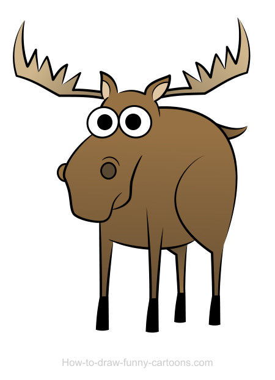

Home
Moose Photos
Moose Population
Contact Us
Moose News
About Me
Moose News
Check out what's new with Moose in New Hampshire!
New Hampshire Moose Hunt Success Rate Lower Than 2016
from US News
N.H. Drought Was Good for Moose
from The Boston Globe
Where is the Best Place to See Moose in NH?
from NHPR
High Temperatures Make for Challenging Moose Hunt
from WMUR
Climate Change Leading Cause of Moose and Loon Population Decline in NH
from NHPR
Have some moose news you think we should post?
Let us know!
